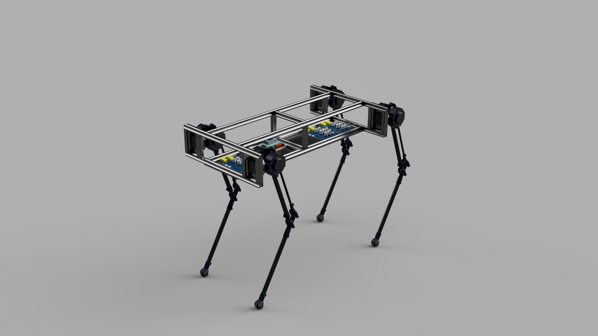
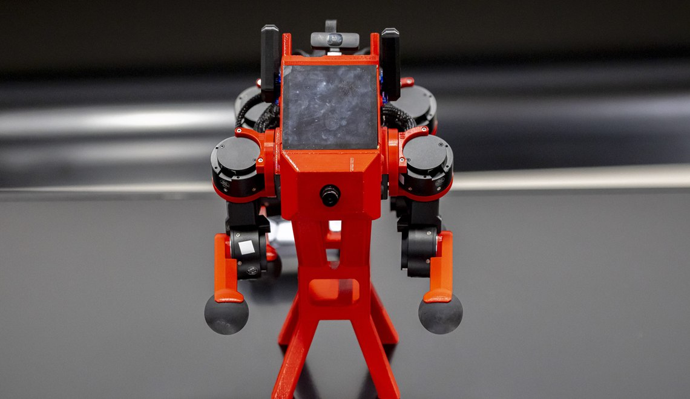
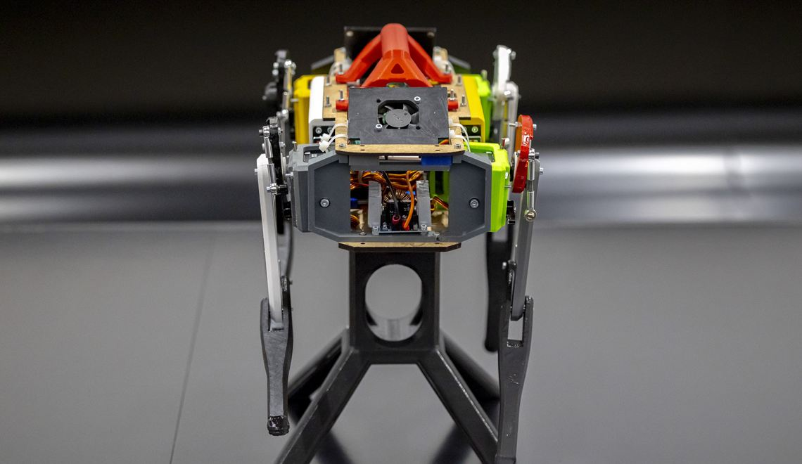
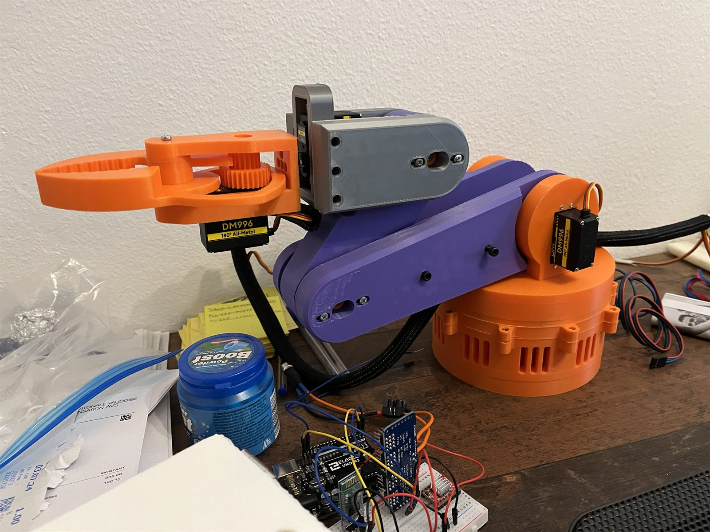
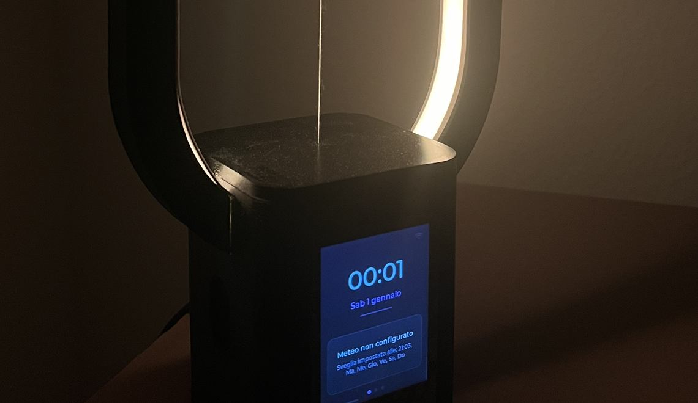

About
Passionate about general robotics, MedTech, and exploring applications in extreme environments. I spend my time developing mechatronic and robotic projects, and building the custom embedded systems that make them move.
Most of that work happens inside BARK, the robotics group of the AI Team, a student association at EPFL. I moved from DINGO's electronic sub-team to leading the project, then led the sub-team behind PUPPER (where I designed the custom robotic arm from scratch) and I now lead BYTE as project leader and hardware designer, responsible for its pre-charge circuit and power distribution board.
What keeps pulling me back is the layer where electronics and software mix: high-current distribution, motor and servo driving, and the firmware that has to hold it all together. It is also the layer I still have the most to learn about. On my own I tinker with the same problems at a much smaller scale, from a teleoperated five-axis arm to a smart lamp.
Skills
Electronics
- PCB DesignIntermediate, 6.5 out of 10
- Power ElectronicsIntermediate, 5.5 out of 10
- KiCadAdvanced, 8.5 out of 10
Mechanics
- CATIA V5Intermediate, 6.5 out of 10
- Fusion360Intermediate, 7 out of 10
- 3D PrintingAdvanced, 9 out of 10
Software
- C / C++ / PythonIntermediate, 7 out of 10
- Embedded SystemsIntermediate, 6 out of 10
- RTOSIntermediate, 6 out of 10
- ROS2Intermediate, 6 out of 10
Soft skills
- Team LeadershipAdvanced, 9 out of 10
- Public SpeakingIntermediate, 7 out of 10
Hover or tap a skill to see how confident I am with it.
Experience
BARK projects
BARK is the robotics group of the AI Team, a student association at EPFL.

BYTE
Led the BARK team in the development of a quadruped robot called BYTE, while personally designing the Pre-Charge Circuit and PDB to manage high-current distribution and inrush current protection.

PUPPER
Led a sub-team within the BARK project to build Stanford's open-source Pupper V3. Co-assembled the quadruped platform and independently designed the custom robotic arm from scratch.

DINGO
Inherited a non-functional electronics system for the DINGO robot, then troubleshot and corrected the hardware back in line with Stanford's original open-source specifications.
Personal projects

Teleoperated Robo-Arm
Assembled a 3D-printed 5-axis arm from an open-source Thingiverse model, and designed the electronics and embedded control logic from scratch to drive it over Bluetooth.

Smart Heng Lamp
Developed a smart lamp with Bluetooth connectivity and programmable LED effects.